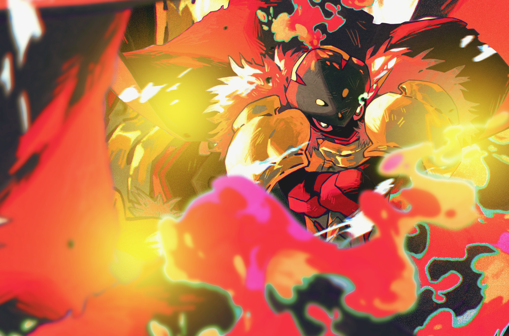

Sur le forum, nous vous laissons le choix de votre starter (le premier Pokémon avec lequel vous commencez votre aventure). Il y a cependant quelques règles autour des starters :
― Limitation d'utilisation ›
Il y a une limitation de 3 utilisations d'un Pokémon. Ainsi, si Salamèche est déjà utilisé trois fois, vous ne pourrez pas le choisir une fois de plus. Vous pourrez retrouver le bottin des starters déjà pris ici.
― Premier stade d'évolution ›
Comme précisé, votre Pokémon commence obligatoirement à son premier stade d'évolution. Cela inclut les Pokémon bébés : si vous souhaitez un Pikachu, il vous faudra donc commencer avec un Pichu !
― Espèces indisponibles ›
Certaines espèces de Pokémon ne pourront pas être utilisées, afin de conserver une certaine rareté : les Légendaires, les Fabuleux, les Chimères, les Pokémon Type-0, les Pokémon fossiles, ainsi que les Pokémons d'Etherium.
― Niveau de départ ›
Votre Pokémon d'aventure commence au niveau 5.
― Chance chromatique ›
À la validation de votre fiche, un dé sera lancé afin de déterminer si votre Pokémon est chromatique ou non (1 chance sur 50).
En ce qui concerne votre équipe, tout comme dans les jeux, votre équipe principale ne peut contenir que six Pokémon.
Néanmoins, dans vos RP, vos autres Pokémon peuvent tout à fait accompagner votre dresseur. Attention toutefois : s'ils ne font pas partie de votre équipe principale, vous ne pourrez pas les utiliser pour les combats, l'exploration, etc.
Les Pokémon chromatiques, aussi appelés shiny, se distinguent par leurs couleurs différentes de celles habituelles de leur espèce.
Sur Etherium, vous avez 1 chance sur 50 d’en rencontrer un. Ce taux peut évoluer selon vos vestiges. Lors de chaque rencontre avec un Pokémon sauvage en capture, le staff lance un dé pour déterminer s’il est chromatique. Ce jet s’applique également à votre starter, à la réanimation de vos fossiles et à l’éclosion de vos œufs.
Une fois votre Pokémon chromatique obtenu, vous pouvez personnaliser son apparence : vous n’êtes pas obligé d’utiliser les couleurs ou le sprite shiny officiels. Cette liberté se décline en trois catégories :
- Shiny classique : changement de couleurs et ajout d’un accessoire, comme une fleur, une cape ou un foulard. Vous pouvez le personnaliser sans validation du staff.
- Shiny poussé : changement de couleurs, ajout de plusieurs accessoires ou modifications légères de son apparence : cornes, ailes ou pattes un peu plus grandes ou plus petites, mèches, touffes de poils, cicatrices… Une validation du staff dans les demandes administratives diverses est nécessaire.
- Variant : changement de type ou transformation importante de la morphologie : ajout de têtes, d’ailes, de pattes, d’appendices ou d’un exosquelette, modification majeure de la taille ou du poids… Ces formes sont réservées au staff, notamment pour les boss de zone et les créations propres au contexte d’Etherium. Elles ne sont pas accessibles aux joueurs.
Aucune justification RP n’est demandée pour les shiny classiques ou poussés : le fonctionnement de la simulation permet ces personnalisations.
Vous pouvez également imaginer et partager des concepts de variants hors RP, si vous souhaitez participer au Pokédex d’Etherium. Ces créations ne peuvent toutefois pas intégrer vos T-Cards ou votre inventaire RP.
Il existe un objet permettant de rendre instantanément un Pokémon Chromatique : le Charme Chroma hors événement spécial du forum, celui-ci n’est obtenable que via les vestiges et vendables par ceux capables de les créer. Son usage est unique et son utilisation demande une validation dans le sujet Progression Pokémon
Dans la grande globalité, les Pokémon sont incapable de communiquer avec les humains. Ils peuvent bien évidemment nous comprendre et faire des gestes ou des mimiques pour se faire comprendre en retour, mais le langage humain leur est quasiment inacessible, à quelques exceptions près.
Les Pokémon doués de télépathie, qui peuvent manipuler l'aura ou qui sont aptes à imiter autrui peuvent communiquer chacun de leur façon. Néanmoins ils sont limité par leur lien avec leur Dresseur ou leur puissance "à l'état sauvage".
Rang D : Communique que par certains mots précis.
Rang C : Communique toujours en mots, mais ils ont bien plus de vocabulaire
Rang B : Communique avec des phrases simples
Rang A : Communique avec des phrases plus complexes
Rang S : Apte à communiquer pleinement
Restriction :
La télépathie et l'aura sont limité au contact ou a une portée de 1,5*(Rang) mètres. Les communications vocales sont sous la portée de l'ouïe.